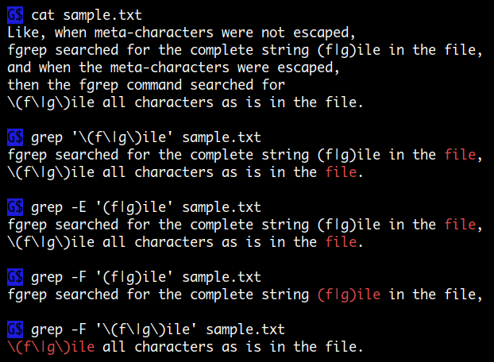
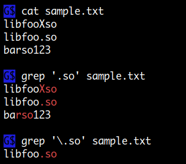
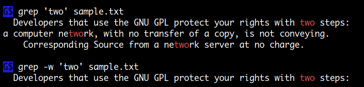

grep
명령의 출력이나 파일에서 regex 을 이용해 매칭 되는 라인, 스트링을 찾을 때
자주 사용되는 명령이 grep 입니다.
grep 명령은 ed 라인 에디터를 만든 Ken Thompson 이 스트링 매칭 기능을 분리해서 별도의 명령으로 만든 것으로
grep 이라는 이름은 ed 명령의 g/re/p 에서 유래합니다.
( g 는 global search 를 re 는 regular expression, p 는 print 를 의미 )
이후에 extended regular expression 을 사용하는 egrep, 단순 fixed 스트링( regex 가 아닌 )을 검색하는 fgrep 같은 명령이 추가되었지만 지금은 grep 하나의 명령에서 -E, -F 옵션을 통해 모두 제공됩니다. 하위 호환성을 위해 /bin/egrep, /bin/fgrep 명령이 아직 존재하지만 단순히 wrapper script 에 불과합니다.
grep 명령을 잘 사용하기 위해서는 먼저 regex 에 대해서 알고 활용할 수 있어야 합니다. 여기서는 regex 를 이용한 여러 가지 활용 방법보다는 명령에서 제공하는 전반적인 기능에 대해서 알아보겠습니다. 다음은 옵션 설정을 통해서 grep 명령에서 사용할 수 있는 regex 종류입니다. ( 각각의 차이점에 대해서는 이곳 을 참고하세요 )
-G, --basic-regexp # 기본값 입니다.
basic regular expression (BRE).
-E, --extended-regexp
extended regular expression (ERE).
-P, --perl-regexp
Perl-compatible regular expression (PCRE).
-F, --fixed-strings # regex 를 사용하지 않고 문자 그대로 매칭하는 것으로 속도가 제일 빠름
fixed strings

매칭할 스트링에 regex 메타문자가 포함될 경우 escape 해야 합니다
. 문자는 regex 에서 사용되는 특수 문자로 임의의 한 문자에 해당됩니다.
따라서 . 문자 자체를 매칭하기 위해서는 escape 해야 합니다.

여러 개의 매칭 패턴을 사용
-e PATTERN, --regexp=PATTERN
-e 옵션을 사용하면 여러 개의 매칭 패턴을 적용할 수 있습니다.
$ grep -e 'harry' -e 'pulse' /etc/passwd
pulse:x:116:124:PulseAudio daemon,,,:/var/run/pulse:/bin/false
harry:x:1000:1000:NetworkManager:/home/harry:/bin/bash
또한 검색할 스트링이 - 문자로 시작할 경우 grep 명령의 옵션과 구분하기 위해서 사용할 수 있습니다.
# 검색할 스트링 '--width' 가 grep 명령의 옵션으로 인식돼 오류 발생
$ grep '--width' *.cpp
grep: unrecognized option '--width'
Usage: grep [OPTION]... PATTERN [FILE]...
Try 'grep --help' for more information.
$ grep -e '--width' *.cpp
OK
$ grep -- '--width' *.cpp
OK
대, 소문자 구분없이 매칭
-i, --ignore-case
대, 소문자 구분 없이 매칭하려면 이 옵션을 사용하면 됩니다.
invert 매칭
-v, --invert-match
invert 매칭은 반대로 매칭되지 않는 라인을 프린트 합니다.
Context line control
grep 명령을 사용하다 보면 매칭 되는 라인을 표시하는 것 외에 더해서 이전, 이후 n 라인을 표시하는 것이 필요할 때가 있습니다. 이때 사용할 수 있는 옵션입니다.
-A NUM, --after-context=NUM
-B NUM, --before-context=NUM
-C NUM, -NUM, --context=NUM
$ cat sample.txt
aaa
bbb
ccc
ddd
eee
fff
ggg
$ grep -A 2 'ddd' sample.txt # After 2 lines
ddd # ddd
eee
fff
$ grep -B 2 'ddd' sample.txt # Before 2 lines
bbb
ccc
ddd # ddd
$ grep -C 2 'ddd' sample.txt # Context 2 lines
bbb
ccc
ddd # ddd
eee
fff
$ grep -A2 -B3 'ddd' sample.txt
...
recursive 매칭
-r, --recursive
특정 디렉토리 이하 모든 파일을 대상으로 매칭합니다.
# ./dir1 ./dir2 디렉토리 이하 모든 파일에서 'hello' 매칭
$ grep -Iwr 'hello' ./dir1 ./dir2
# 디렉토리 인수를 주지 않으면 현재 디렉토리가 적용됩니다.
$ grep -Iwr 'hello'
$ grep -Ir 'super_block {' /usr/include
/usr/include/linux/bfs_fs.h:struct bfs_super_block {
/usr/include/linux/minix_fs.h:struct minix_super_block {
/usr/include/linux/minix_fs.h:struct minix3_super_block {
/usr/include/linux/qnx4_fs.h:struct qnx4_super_block {
/usr/include/linux/nilfs2_ondisk.h:struct nilfs_super_block {
/usr/include/linux/romfs_fs.h:struct romfs_super_block {
-R, --dereference-recursive
디렉토리 심볼릭 링크가 있을 경우 -r 옵션은 기본적으로 follow 하지 않는데 반해 -R 옵션은 follow 합니다.-r 옵션 사용시 특정 링크만 follow 하고 싶으면 해당 링크를 디렉토리 리스트에 같이 적어주면 됩니다.
include, exclude 설정
GLOBbing 패턴을 이용해서 특정 파일들만 포함시키거나 제외할 수 있습니다.
--include=GLOB
# 'hello' 스트링을 찾을 때 '*.c' 파일들만 검색
$ grep -r --include='*.c' 'hello'
--exclude=GLOB
# 'hello' 스트링을 찾을 때 '*.cpp' 파일을 제외하고 검색
$ grep -r --exclude='*.cpp' 'hello'
--exclude-dir=GLOB
# 'hello' 스트링을 찾을 때 '.git' 디렉토리를 제외하고 검색
$ grep -r --exclude-dir='.git' 'hello'
binary 파일은 제외하고 검색
바이너리 파일과 텍스트 파일이 혼합되어 있을 경우 이 옵션으로 바이너리 파일을 검색에서 제외할 수 있습니다.
-I
# 'hello' 스트링을 찾을 때 바이너리 파일은 제외하고 검색
$ grep -Irw 'hello'
매칭 스트링만 프린트
-o, --only-matching
이 옵션은 매칭 라인을 프린트하는 것이 아니고, 매칭 되는 스트링만 프린트합니다.
$ sensors | grep -i core | grep -E -o '\+[0-9.]+'
+46.0
+86.0
+100.0
+46.0
+86.0
+100.0
+46.0
+86.0
+100.0
+46.0
+86.0
+100.0
directory, device 파일 skip 하기
-d ACTION, --directories=ACTION
-D ACTION, --devices=ACTION
입력으로 사용되는 파일명에 directory 나 device 이름이 포함될 경우 ACTION 값을 skip 으로 설정하면 skip 할 수 있습니다.
$ grep -I 'main' *
best.c:int main()
err.c:int main() {
grep: gd: Is a directory <--- directory
gd
grep: gmp: Is a directory <--- directory
gmp
main.c:int main() {
$ grep -I -d skip 'main' * # directory skip
best.c:int main()
err.c:int main() {
main.c:int main() {
n 번째 매칭까지만 프린트
-m NUM, --max-count=NUM
전체 데이터를 검색할 필요 없이 n 번째 매칭에서 연산을 종료하고자 할 때 사용할 수 있습니다.
# 첫 번째 'cache 0' 스트링 매칭에서 이후 70 라인을 프린트하고 종료
$ cpuid | grep -m1 -A70 'cache 0'
라인 넘버 프린트
-n, --line-number
매칭 라인을 프린트할 때 라인 넘버도 함께 프린트됩니다.
$ grep -nA2 foo test.c
190:int foo()
191-{
192- int arr[] = { 100, 200, 300 };
$ grep -n foo *.c
best.c:40:int foo()
err.c:12:int foo() {
main.c:9:int foo() {
...
출력에 파일명도 포함
-H, --with-filename
-h, --no-filename
grep foo *.c 와 같이 여러 개의 파일을 검색하는 경우는 -H 가 디폴트가 되어
파일명이 함께 표시되고 grep foo hello.c 와 같이 하나의 파일만 검색하는 경우
-h 가 디폴트가 되어 파일명이 표시되지 않습니다.
이것은 find 명령의 -exec 에서 grep 명령을 실행할때 하나의 파일로 인식되어
파일명이 표시되지 않는데 이때 -H 옵션을 사용하면 파일명을 함께 출력할 수 있습니다.
$ find * -name Makefile -exec grep -Hne 'include' {} \;
매칭 라인 카운트
-c, --count
해당 파일에 몇 개의 매칭 되는 라인이 있는지를 알려줍니다.
$ grep -c 'hello' *.html
aaa.html:2
bbb.html:0
ccc.html:1
...
단어 매칭
-w, --word-regexp
스트링의 일부분이 아닌 단어 매칭을 합니다.

라인 매칭
-x, --line-regexp
스트링의 일부분이 아닌 라인 전체를 매칭 합니다.
arr1=("foo 111" "bar 222" "zoo 333")
# 실질적으로 grep -q '^bar 222$' 와 동일
if `printf '%s\n' "${arr1[@]}" | grep -x -q 'bar 222'`; then
echo yes
fi
파일명만 프린트
-l, --files-with-matches
-L, --files-without-match
이 두 옵션은 매칭 라인을 출력하지 않고 단지 파일명만 출력합니다.-l 옵션은 매칭이 발견되는 파일명을 프린트하고 (첫 번째 매칭에서 스캐닝이 중단됩니다.)-L 옵션은 반대로 매칭이 발견되지 않는 파일명을 프린트합니다.
# ./dir 디렉토리 이하 모든 파일을 검색해서 'hello' 를 포함하고 있을 경우 XXX 를 YYY 로 변경
$ grep -rl 'hello' ./dir | xargs sed -i 's/XXX/YYY/g'
라인 구분자가 NUL 문자일 경우
-z, --null-data
-Z, --null
-z 옵션은 입력되는 데이터가 newline 대신에 NUL 문자를 라인 구분자로 할경우 사용합니다.-Z 옵션은 -l 옵션을 이용해 파일명을 출력할때 NUL 문자를 라인 구분자로 출력합니다.
프린트 금지
-q, --quiet, --silent
아무 출력도 하지 않고 매칭이 발견되는 즉시 종료 상태 값으로 0 을 리턴하고 exit 합니다.
-s, --no-messages
오류가 발생해도 에러 메시지를 출력하지 않습니다.
이 옵션을 사용하면 명령 실행시 출력이 발생하지 않고 종료 상태 값만 설정됩니다.
따라서 스크립트를 작성할 때 if 문에서 사용하기 좋습니다.
$ AA="foo 12345 bar"
$ if echo "$AA" | grep -Eq '[0-9]+ bar'; then echo 111; else echo 222; fi
111
gzip 파일 grep
zgrep 명령을 이용하면 gzip 파일을 grep 할 수 있습니다.
$ zgrep –i error /var/log/syslog.2.gz
매칭에 escape sequence 를 사용하는 방법
grep 은 regex 를 작성할 때 기본적으로 escape sequence 를 사용할 수 없습니다. 따라서 매칭에 escape sequence 를 사용하려면 다음과 같은 방법을 이용해야 합니다.
# bash 의 경우 $' ' quotes 을 사용
bash$ echo -e 'hello\tworld' | grep $'\t'
hello world
# sh 의 경우 "$(echo "\t")" 형식 을 사용
sh$ echo 'hello\tworld' | grep "$(echo "\t")"
hello world
# 또는 PRE 를 사용
$ echo -e 'hello\tworld' | grep -P '\t'
hello world
$ grep -P -abo '\135\0\0\0' vmlinuz-5.3.0-45-generic
6974861:]
9128654:]
9130253:]
$ echo -e 'hello\tworld' | awk '/\t/'
hello world
grep 은 binary 파일도 매칭에 사용할 수 있습니다.
grep 이 binary 파일을 다루는 3 가지 방법
1. --binary-files=binary
디폴트로 binary 파일 내에 존재하는 스트링을 검색해서 매칭이 있을 경우 알려줍니다.
텍스트 파일에서처럼 매칭 라인을 출력하지는 않습니다.
$ grep ELF mycomm # mycomm 은 실행 파일
Binary file mycomm matches <--- 매칭이 있다고 알려줌
2. --binary-files=without-match
binary 파일일 경우 매칭을 시도하지 않고 skip 합니다.
이것은 -I 옵션과 같은 것입니다.
3. --binary-files=text
binary 파일도 text 파일처럼 취급하여 매칭하고 출력합니다.
이것은 -a 옵션과 같은 것입니다.
-a, --text
-b, --byte-offset
-b 옵션과 -o 옵션을 이용하면 파일내에 매칭되는 위치의 offset 값을 구할 수 있습니다.
# ':' 왼쪽이 offset 값
$ echo helloworld | grep -bo hel
0:hel
$ echo helloworld | grep -bo ll
2:ll
$ echo helloworld | grep -bo wor
5:wor
$ echo helloworld | grep -bo l
2:l
3:l
8:l
따라서 -abo 옵션을 이용하면 binary 파일내에서 매칭되는 위치의 offset 값을 구할 수 있습니다.
활용 예는 여기 를 참고 하세요
Perl Regular Expressions
grep 명령은 -P 옵션을 사용하면 perl regex 을 사용할 수 있습니다.
여기서는 단어를 추출할때 유용하게 사용할수 있는
lookbehind, lookahead 기능에 대해서 알아보겠습니다.
추출하고자 하는 스트링이 가운데 위치한다고 할경우 lookbehind 식은 왼쪽에
lookahead 식은 오른쪽에 위치하고 다음과 같은 방식으로 작성합니다.
lookbehind : (?<=foo) (?<!foo) # lookbehind 는 '<' 문자가 붙는다.
lookahead : (?=bar) (?!bar) # '=' 는 같을경우, '!' 는 같지않을경우
다음은 strace 출력에서 발췌한 내용인데 여기서 함수명만 추출하려고 합니다.
함수명은 바로 뒤에 붙어서 ( 문자가 오기 때문에 아래 첫번째 명령으로 쉽게 추출이 되지만
문제는 출력에도 ( 문자가 붙는다는 것입니다.
따라서 매칭 시에는 ( 문자를 포함하지만 출력 시에는 제외하는 것이 필요한데
이때 사용할 수 있는 기능이 lookahead 입니다.
실제 정확히 추출하려면
sed -En 's/^[0-9]+ (\w+).*/\1/p'를 이용해야 합니다.
$ cat sample.txt
5751 geteuid() = 1000
5751 fstat(1, {st_mode=S_IFIFO|0600, st_size=0, ...}) = 0
5751 write(1, "1000\n", 5) = 5
5750 <... read resumed> "1000\n", 128) = 5
5751 close(1 <unfinished ...>
5750 read(3, <unfinished ...>
5751 <... close resumed> ) = 0
5750 <... read resumed> "", 128) = 0
$ grep -P -o ' \w+\(' sample.txt
geteuid(
fstat( # 출력에도 `(` 문자가 붙는다.
write(
close(
read(
# lookahead 기능을 이용해 출력시에는 `(` 문자를 제거
$ grep -P -o ' \w+(?=\()' sample.txt
geteuid
fstat
write
close
read
다음은 lookbehind 기능을 이용해 C-@ outputs 뒤에오는 단어를 추출하는 예입니다.
$ cat sample.txt
\e, outputs !#:$\e^
\C-@ outputs git
\e[23~ outputs \C-k\C-ugit pull\C-m
\eh8 outputs !#:8\e^
\eu outputs \eb\eU1
$ grep -P -o '(?<=C-@ outputs )\w+' sample.txt
git
grep 외 다른 명령
요즘에는 grep 과 같은 기능의 신세대 명령들이 많이 소개되고 있습니다.
unix 명령은 기본적으로 파이프로 여러 명령들과 연결해 사용되기 때문에
보통 single thread 로 작성되는 경우가 많은데
multi-thread 와 최신 cpu instruction 을 활용해서 성능을 높인 명령들이 있습니다.
그중에서 소개드릴 명령은 ripgrep 이라는 명령으로 사용방법도 grep 명령과 비슷하고
리눅스 소스 같은 많은 파일이 존재하는 디렉토리도 빠르게 검색 결과를 출력해 줍니다.
$ rg -w bash ./linux
. . .
$ rg -w 'ptrdiff_t;' /usr/{include,lib}
. . .
Quiz
ps ax | grep firefox 명령을 실행해보면 firefox 프로세스가 출력되는 것에 더해서
grep 명령에도 firefox 스트링이 존재하기 때문에 grep 명령도 포함되는 것을 볼 수 있는데요.
어떻게 하면 grep 명령은 출력에서 제외시킬수 있을까요?
$ ps ax | grep firefox | less
5256 ? Sl 304:53 /usr/lib/firefox/firefox
5333 ? Sl 126:00 /usr/lib/firefox/firefox -contentproc ...
5441 ? Sl 116:04 /usr/lib/firefox/firefox -contentproc ...
14744 ? Sl 169:55 /usr/lib/firefox/firefox -contentproc ...
14780 ? Sl 155:18 /usr/lib/firefox/firefox -contentproc ...
17623 pts/12 S+ 0:00 grep --color=auto firefox # --> grep 명령도 출력에 포함된다.
# 다음과 같이 regex 을 활용하면 됩니다.
$ ps ax | grep 'firefo[x]' | wc -l
5
2.
다음 명령문은 어디가 잘못되었을까요?
$ cat /etc/mtab | grep cgroup
이것은 grep 명령을 사용할 때 종종 발견되는 부분인데 명령문이 틀린 것은 아니지만 위 명령문은 다음과 같이 하나의 명령으로 실행할 수 있습니다.
$ grep cgroup /etc/mtab
$ grep cgroup < /etc/mtab